Официальный сайт города. URL: https://gov.spb.ru
Карта города. URL: https://tourister.ru
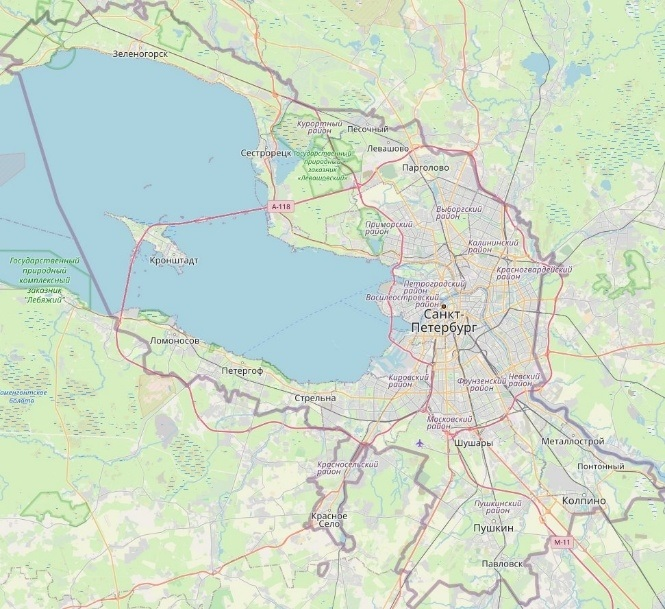
Вид со спутника. URL: Ссылка на Яндекс.Карты
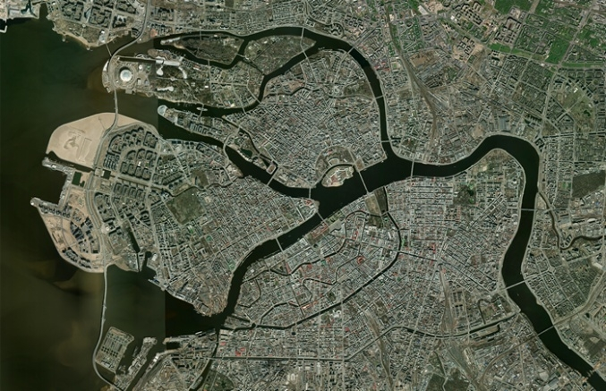
27 мая (16 мая по старому стилю) 1703 года на Заячьем острове в устье реки Невы была заложена крепость. Этот день считается днём основания Санкт-Петербурга.
Почему именно Заячий остров? Пётр I выбрал его из-за удачного расположения: остров находился у разветвления Невы на два рукава, недалеко от моря, и со всех сторон омывался водой, что служило естественной преградой. С острова можно было держать под прицелом вражеские корабли, вошедшие в Неву.
Название. Крепость получила имя «Санкт-Питербурх» в Петров день, когда была заложена церковь Святых апостолов Петра и Павла. Апостол Пётр считался хранителем ключей от рая, и это казалось царю символичным: город, носящий имя его небесного покровителя, должен был стать «ключом от Балтийского моря». Позже крепость стали называть Петропавловской — по имени её главного собора.
Первый храм. В ноябре 1703 года в память о том, что крепость была заложена в день Святой Троицы, в городе был открыт первый храм — Троицкий.
Стратегическое значение. Пётр I придавал новому городу важное значение для обеспечения водного пути из России в Западную Европу.
Санкт-Петербург стал первым в России городом, который развивался по заранее разработанному плану. Это определило его высокий градостроительный уровень и формирование уникальных городских ансамблей. Для ускорения каменного строительства Пётр I в 1714 году запретил возводить каменные здания по всей России, кроме Петербурга.
Строительство велось в сложных условиях: болотистая местность, слабые грунты, суровый климат требовали огромных усилий и инженерных решений (например, забивки деревянных свай).
Таким образом, основание Санкт-Петербурга было не просто созданием нового города, а масштабным проектом Петра I, направленным на модернизацию России и её интеграцию в Европу.
Ниже представлены панорамные виды и ключевые архитектурные объекты города:
Каналы города на закате. URL ресурса: Ссылка на VK-фото
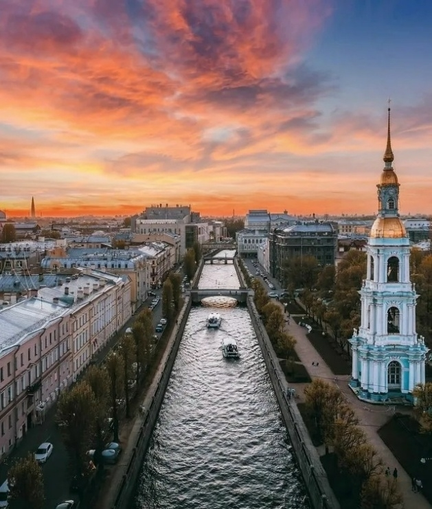
Казанский собор и Невский проспект вечерняя панорама. URL ресурса: Ссылка на 35photo
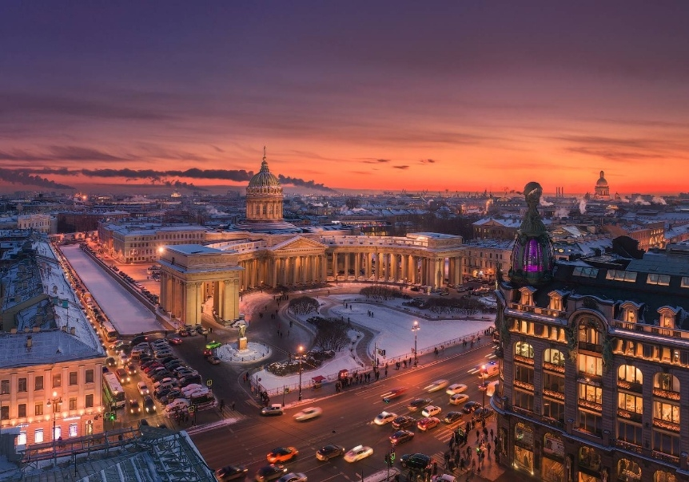
Вид на Неву и Дворцовую площадь с высоты птичьего полета. URL ресурса: Ссылка на AirPano
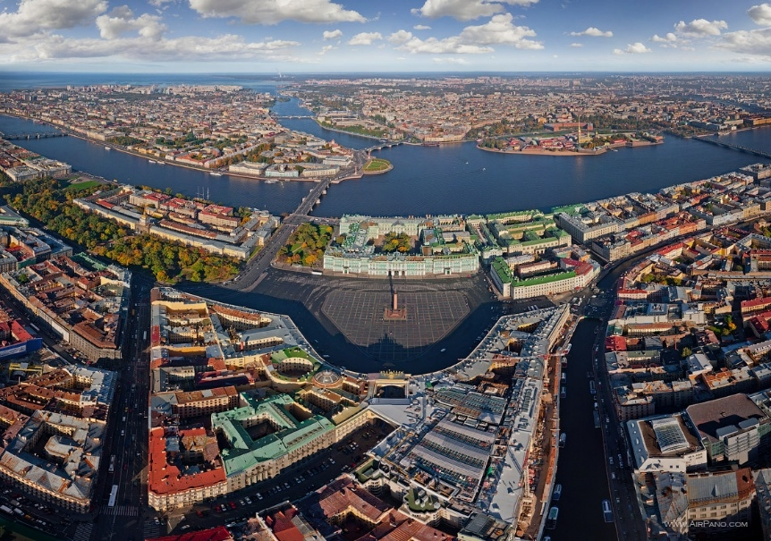
Исаакиевский собор в солнечный день. URL ресурса: Ссылка на Pinterest
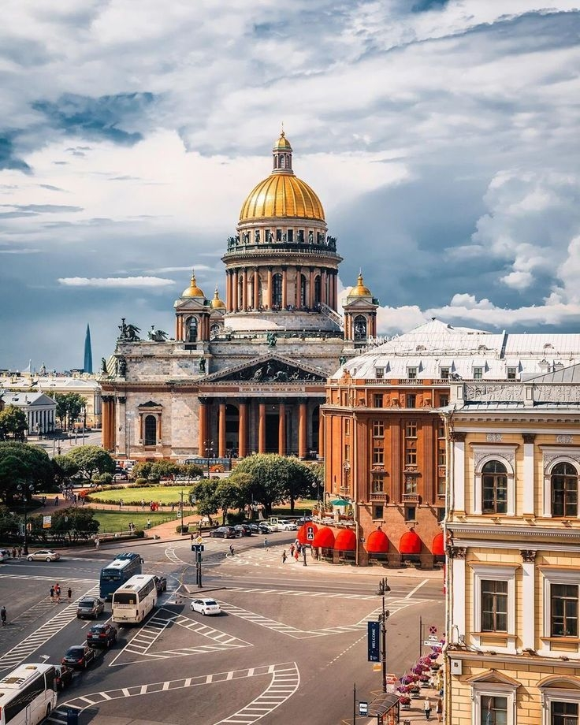
Современный Лахта-Центр зимой. URL ресурса: Ссылка на Wikiway
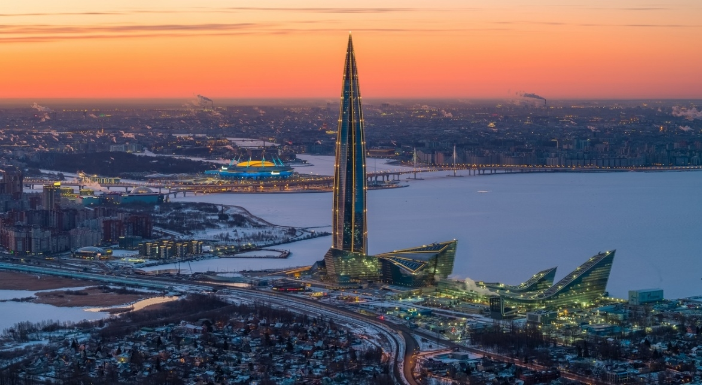
| Фотография | Описание |
|---|---|
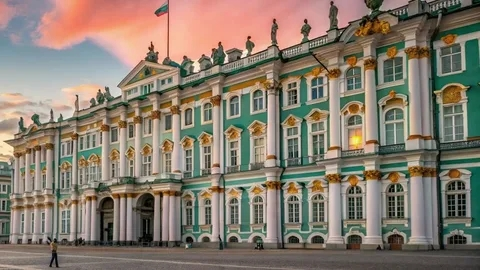 |
Эрмитаж — один из крупнейших и известнейших музеев мира, расположенный в Санкт‑Петербурге. Основан в 1764 году по инициативе Екатерины II, его коллекция насчитывает около трёх миллионов произведений искусства и памятников мировой культуры. Главный комплекс включает Зимний дворец и несколько связанных с ним исторических зданий на Дворцовой набережной. |
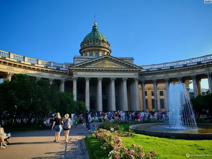 |
Казанский собор в Санкт‑Петербурге — один из крупнейших православных храмов города. Построен в 1801–1811 годах архитектором Андреем Воронихиным в стиле русского классицизма; хранит чтимый список Казанской иконы Божией Матери и служит кафедральным собором Санкт‑Петербургской епархии РПЦ. |
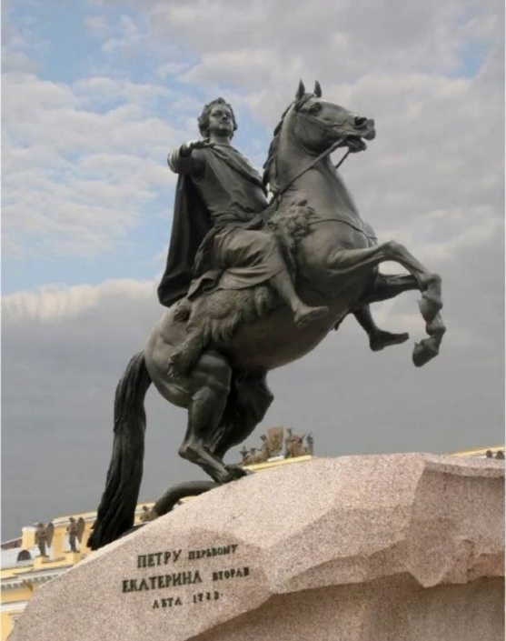 |
«Медный всадник» — памятник Петру I в Санкт‑Петербурге на Сенатской площади. Создан скульптором Этьеном Морисом Фальконе, открыт в 1782 году. Несмотря на название (закрепившееся благодаря одноимённой поэме А. С. Пушкина), выполнен из бронзы; установлен на гранитном «Гром‑камне». Высота монумента — 10,4 метра. |
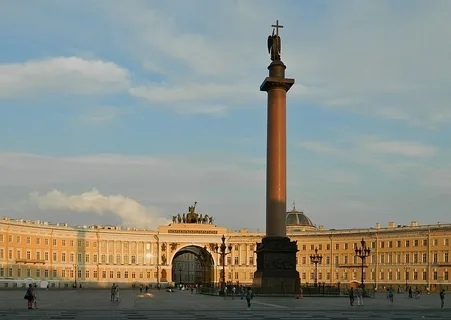 |
Александровская колонна — монумент на Дворцовой площади в Санкт‑Петербурге, возведённый в 1834 году в честь победы над Наполеоном. Это самый высокий в мире памятник из цельного гранита (47,5 м), его венчает фигура ангела с крестом. |
URL источника текста: https://руни.рф/Гимн_Санкт-Петербурга
«Державный град, возвышайся над Невою,
Как дивный храм, ты сердцам открыт!
Сияй в веках красотой живою,
Дыханье твоё Медный всадник хранит.
Несокрушим - ты смог в года лихие
Преодолеть все бури и ветра!
С морской душой,
Бессмертен, как Россия,
Плыви, фрегат, под парусом Петра!
Санкт-Петербург, оставайся вечно молод!
Грядущий день озарён тобой.
Так расцветай, наш прекрасный город!
Высокая честь - жить единой судьбой!»
| 🏠 На Главную | | | 🔹 Обзор интернет-ресурсов | | | 🗺️ Путеводитель по СПб |